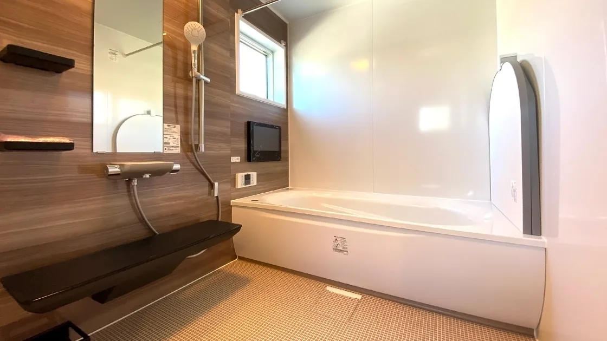

キッチン
料理や片づけがしやすいキッチンへ。キッチン本体の交換に加え、作業スペースや収納の配置を見直し、使いやすい空間を考えます。
毎日使う水回りを、心地よく、使いやすく。キッチン・浴室・洗面所・トイレを、今の暮らしに合わせて見直します。

料理や片づけがしやすいキッチンへ。キッチン本体の交換に加え、作業スペースや収納の配置を見直し、使いやすい空間を考えます。
一日の終わりに、ゆっくりくつろげる浴室へ。浴槽やシャワーの交換、床や壁の見直しなど、使いやすさとお手入れのしやすさを大切にします。
身支度も洗濯も、すっきり使いやすい洗面所へ。洗面台の交換や収納の見直し、床・壁の張り替えなど、限られた空間を使いやすく整えます。
毎日気持ちよく使えるトイレへ。便器の交換や床・壁の張り替え、手すりや収納の配置など、掃除のしやすさと使いやすさを考えます。
調理スペースが狭い、洗面台が使いにくい、浴室の出入りが気になる。毎日の動きや使い方に合わせて、設備や配置を見直します。
汚れが落ちにくい場所や、掃除しづらいすき間が気になる。設備の形や床・壁の素材を見直し、お手入れしやすい空間を考えます。
調理器具や洗面用品、洗剤の置き場が足りない。しまう物の量と使う場所に合わせて、取り出しやすく片づけやすい収納を考えます。
今のお悩みや、リフォームで叶えたいことをお聞きします。
設備の状態や寸法、配管の位置などを確認します。
確認した内容をもとに、設備や工事範囲をご提案します。
工事内容を確認し、生活への影響も考えながら日程を調整します。
決まった内容に沿って工事を進め、仕上がりを確認します。
使いにくいと感じる場所や、気になっていることからお聞かせください。今の暮らし方を整理しながら、見直したい箇所を一緒に考えます。
工事範囲や設備の状態、製品の手配状況によって異なります。現地確認と工事内容の検討を行い、必要な期間や日程を確認します。
工事箇所や内容によっては、一時的に使えなくなることがあります。使えない設備と期間、生活への影響を事前に確認します。